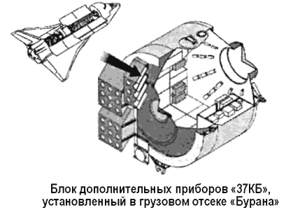
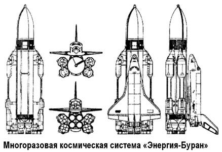
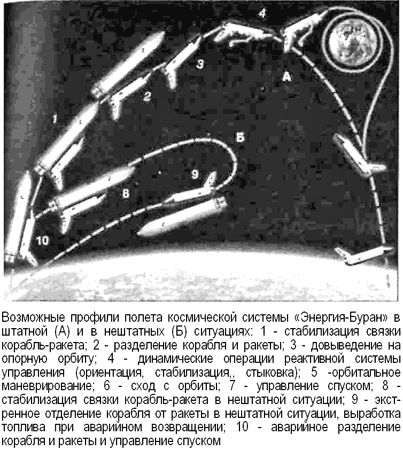

Первый и последний полет «Бурана»
Программа первого полета орбитального самолета, за которым оставалось название «Буран», неоднократно пересматривалась.
Предлагались трехсуточный и двухвитковый варианты. По первому варианты особые трудности могло вызвать то, что не были отработаны узлы открытия створок отсека полезного груза и система обеспечения теплового режима, энергоустановка на основе топливных элементов также не была готова.
А второй вариант, в свою очередь, позволял выполнить основную задачу — демонстрацию спуска в атмосфере и посадки в автоматическом режиме.
Для реализации второго варианта были выполнены следующие мероприятия. Вместо топливных элементов поставили аккумуляторные батареи. Для записи параметров работы систем и параметров полета в отсеке полезного груза разместили блок дополнительных приборов. Створки решили не открывать, а сброс тепла обеспечить за счет испарения воды.
Кроме того, в кабине «Бурана» установили телекамеру, которая «смотрела» вперед через остекление. При этом масса «Бурана» стала меньше расчетной и составляла на старте 79,4 тонны.
Блок дополнительных приборов, фигурировавший в документации под индексом «37КБ», включал следующие дополнительные системы, приборы и агрегаты: систему бортовых измерений; аварийную система питания «Бурана» (48 аккумуляторных батарей); автономную систему питания самого блока (12 аккумуляторных батарей); систему обеспечения теплового режима; систему пожарообнаружения и пожаротушения; систему обеспечения газового состава; систему внутреннего освещения.

Сам по себе блок «37КБ» представлял собой гермоотсек диаметром 4,1 метра и кольцевых проставок, которые крепились к шпангоутам с двух сторон. Общая длина блока — 5,1 метра при массе 7150 килограммов и объеме 37 м3.
На проставках устанавливались узлы крепления «37КБ» в отсеке полезной нагрузки. Аппаратура располагалась как внутри гермоотсека, так и снаружи. «37КБ» был связан с орбитальным кораблем посредством электрических интерфейсов через четыре платы. Для контроля за работой аппаратуры в нештатных ситуациях предусматривалось посещение модуля экипажем.
Первый беспилотный полет орбитального корабля «Буран» был запланирован непродолжительным: два витка, или 206 минут полета. В соответствии с его задачами и программой были задействованы состав и режимы работы бортовых и наземных систем.
В период с 14 января по 2 февраля 1988 года над ракетой «Энергия-1Л» проводились работы на старте с целью комплексной проверки всех систем. Фактически эта ракета была готова взлететь уже в марте. Сложнее обстояли дела со сборкой и испытаниями первого орбитального корабля — он еще не был готов. Собранная ракета прошла целую серию дополнительных испытаний и проверок.
Наконец 23 мая собранный пакет «1Л» с установленным на нем орбитальным кораблем «1К1» был привезен на старт для совместных испытаний всех систем. При этих испытаниях была выявлена рассогласованность систем управления орбитального корабля и ракеты. Когда проблему удалось разрешить, ракета вернулась в монтажно-испытательный корпус.
Это было 10 июня 1988 года.
Только 9 октября работы по подготовке комплекса «Энергия-Буран» были завершены, и утром 10 октября огромный установщик массой 3,5 тысячи тонн с ракетой и кораблем с помощью четырех синхронизированных мощнейших тепловозов поплыл в сторону старта. 26 октября Государственная комиссия на основе докладов о готовности систем ракеты-носителя, орбитального корабля и комплекса в целом разрешила техническому руководству приступить к заключительным операциям, заправке и осуществлению пуска комплекса «Энергия-Буран» под индексом «1Л» 29 октября 1988 года в 6 часов 23 минуты.

28 октября в 21 час по московскому времени Государственная комиссия и техническое руководство прибыли на командный пункт старта, когда уже начались подготовительные операции к заправке ракеты. Боевой расчет работал слаженно.
К утру 29 октября, практически в назначенное время — за десять минута до старта — начались автоматические операции взведения ракетной системы и набора готовности. Но за 51 секунду до команды к началу движения ракеты пуск был прекращен: не отделилась платформа прицеливания.
В 7 часов ТАСС первый раз сообщило о задержке пуска на 4 часа, вместо назначенного на 6 часов 23 минуты. Второй раз в 10 часов 30 минут ТАСС сообщило, что была автоматически выдана команда на прекращение дальнейших работ, ведется устранение возникших замечаний. Начался слив компонентов топлива — обязательная процедура при прохождении команды о прекращении подготовки запуска. Тут же возникла новые проблемы — засорился фильтр в бортовой заправочно-сливной магистрали одного из блоков «А».
Эту проблему удалось решить благодаря акробатической пластичности, которую проявил квалифицированный слесарь Александр Швырков, который добрался по хвостовому отсеку и переустановил фильтр — ракету не пришлось снимать со старта.
Однако на доработку платформы прицеливания и новую заправку ракеты ушло довольно много времени. Следующая попытка запустить комплекс была назначена на 15 ноября 1988 года.
Репортаж спецкора «Правды» с космодрома Байконур:
«За сутки байконурцы с тревогой вглядывались в пасмурное небо и вслушивались в метеопрогноз. Где-то блуждал циклон. Вспомнились задержки пуска «Спейс Шаттла» из-за погоды. Вообще-то, специалисты рекомендовали систему «Энергия-Буран» как почти всепогодную. Как носитель, так и корабль должны летать в любое время года и суток, в дождь и в снег. Ограничения по максимальному напору ветра на разных высотах — те же, что и для обычных ракет. Но для первых летных испытаний разработчики очень хотели бы не отказываться от визуального контроля, особенно в связи с мерами безопасности на заключительном этапе — посадке корабля. […] Снова едем ночью вокруг яркой стартовой площадки.
Чувствуется, как напряжена окрестная степь. Посты оцепления, поезда с эвакуированными, колонны пожарных машин в аварийно-спасательных группах. […] В этот раз руководство космодрома пошло навстречу прессе и приблизило ее к месту событий, разместив в объединенном командно-диспетчерском пункте непосредственно у посадочной полосы.
Отсюда значительно лучше, чем с прежнего НП, виден старт «Энергии». Правда, пугает ураганный ветер, рвущий крышу со здания. Брякнуло и посыпалось стекло с диспетчерского «фонаря» на крыше диспетчерского пункта. Но это не смущает летчика-космонавта И. Волка, который наводит на старт телевик фотоаппарата. По дорожке разбегается МиГ — воздушные наблюдения за стартом и подъемом ракеты…»
Циклограмма предстартовой подготовки проходит без замечаний. Но погодные условия ухудшаются. Председатель Государственной комиссии получает очередной доклад метеорологической службы с прогнозом: «Штормовое предупреждение». Как известно, самое трудное в авиации — это посадка, особенно в сложных погодных условиях. Орбитальный корабль «Буран» не имеет двигателей для полета в атмосфере, на его борту не было экипажа, а посадка предусматривалась с первого и единственного захода — все это еще усложняло ситуацию. Тем не менее специалисты, создавшие орбитальный корабль, заверили членов Государственной комиссии, что они уверены в успехе: для системы автоматической посадки этот случай не предельный. Решение на пуск было принято.
В 6 часов 00 минут по московскому времени ракетнокосмический комплекс «Энергия-Буран» оторвался от стартового стола и почти сразу же ушел в низкую облачность.
Через 8 минут завершилась работа ракеты, и орбитальный корабль «Буран» начал первый самостоятельный полет.
Высота над поверхностью Земли составляла около 150 километров, и, как это предусмотрено баллистической схемой полета, было осуществлено довыведение корабля на орбиту собственными средствами.
В течение последующих 40 минут проведены два маневра.
«Буран» вышел на рабочую орбиту наклонением 51,6 и высотой 250–260 километров. Параметры этих маневров (величину, направление и момент отработки импульса объединенной двигательной установки) автоматически рассчитывал бортовой вычислительный комплекс в соответствии с заложенными полетным заданием и реальными параметрами движения на момент отделения от ракеты-носителя.
Первый маневр происходил в зоне связи наземных станций слежения, второй — над Тихим океаном.
Вне участков маневров для соблюдения теплового режима «Буран» двигался в орбитальной ориентации левым крылом к Земле. Правильность заданной ориентации подтверждалась как принимаемой телеметрической информацией, так и «картинкой» с бортовой телекамеры.
Через полтора часа полета бортовой вычислительный, комплекс рассчитал и сообщил в ЦУП параметры тормозного маневра для схода с орбиты. Уточненные данные о скорости и направлении ветра были переданы на борт. «Буран» стабилизировался кормой вперед и вверх. В 8 часов 20 минут в последний раз включился маршевый двигатель. Корабль начал снижение и через полчаса вошел в атмосферу. За время снижения до высоты 100 километров реактивная система управления развернула «Буран» носом вперед. В 8 часов 53 минуты на высоте 90 километров с ним прекратилась связь — плазма, как известно, не пропускает радиосигналов.
Движение «Бурана» в плазме более чем в три раза продолжительнее, чем при спуске одноразовых космических кораблей типа «Союз», и по расчету составляет от 16 до 19 минут. В 9 часов 11 минут, когда корабль находился на высоте 50 километров, стали поступать доклады: «Есть прием телеметрии!», «Есть обнаружение корабля средствами посадочных локаторов!», «Системы корабля работают нормально!».
В этот момент он находился в 550 километрах от взлетно-посадочной полосы, его скорость составляла около 10 Махов.
«Буран» пришел в «прицельную» зону — на рубеж 20 километров — с минимальными отклонениями, что было весьма кстати при посадке в плохих погодных условиях. Реактивная система управления и ее исполнительные органы отключились, и только аэродинамические рули, задействованные еще на высоте 90 километров, вели орбитальный корабль к следующему ориентиру — «ключевой точке».
Заход на посадку проходил строго по расчетной траектории снижения — на контрольных дисплеях ЦУП отметка «Бурана» смешалась к ВПП посадочного комплекса практически в середине допустимого коридора возврата. Включились бортовые и наземные средства радиомаячной системы.
После отметки 10 километров «Буран» летел по траектории, отработанной летающей лабораторией «Ту-154ЛЛ» и атмосферным кораблем-аналогом «БТС-002 ГЛИ».
Вдруг «Буран» круто изменил курс и полетел почти поперек оси ВПП. Проанализировав ситуацию, служба управления доложила: «Все в порядке!» Система не ошиблась, а просто на сей раз оказалась «умнее». «Буран» будет заходить на полосу не левым кругом, как предполагалось, а правым.
Выход в «ключевую точку» проходит по оптимальной для данных начальных условий траектории при практически предельном встречно-боковом ветре.
Совершив свой маневр, корабль правым виражом вышел в «ключевую точку».

Несмотря на сложности целеуказания, на сближение с «Бураном» вылетел самолет сопровождения «МиГ-25», пилотируемый летчиком-испытателем Толбоевым. Благодаря искусству пилота в ЦУПе на экране могли видеть четкое телевизионное изображение корабля — целого и как будто невредимого.
На высоте четырех километров — выход на посадочную глиссаду. Изображение в ЦУП начинают передавать аэродромные телекамеры. Еще минута — и выпуск шасси…
В 9 часов 24 минуты 42 секунды после выполнения орбитального полета и прохождения почти 8000 километров в верхних слоях атмосферы, опережая всего на одну секунду расчетное время, «Буран» мягко коснулся взлетно-посадочной полосы и после небольшого пробега замер в ее центре.
Над ним, прощаясь, пронесся самолет сопровождения…
Программа первого испытательного полета была выполнена полностью.